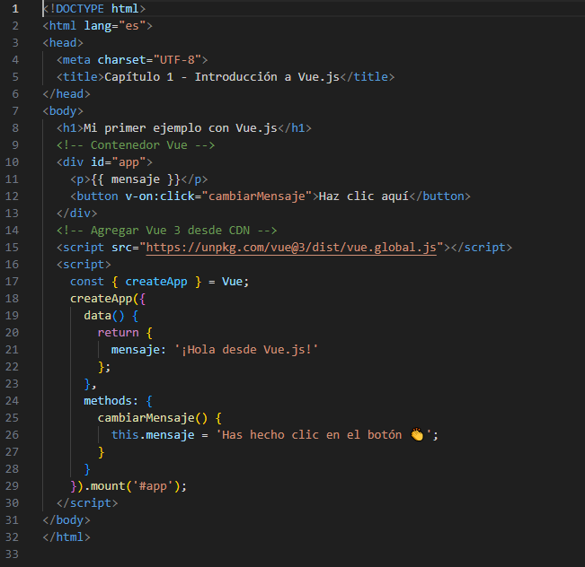

Capitulo I: Introducción
¿Que es Vue?
Vue es un framework de JavaScript, que se puede agregar a una página web HTLM con una etiqueta script. Vue extiene los atributos HTML con directivas y enlaza a HTML con expresoines. Vue (pronunciado /vjuː/, como view ) es un framework de JavaScript para crear interfaces de usuario. Se basa en HTML, CSS y JavaScript estándar y proporciona un modelo de programación declarativo basado en componentes que ayuda a desarrollar eficientemente interfaces de usuario de cualquier complejidad.
Para el desarrollo usando Vue js se tienen dos opciones, una usando el CDN Para comenzar sin instalar nada, puedes usar Vue desde un enlace (CDN) directamente en tu archivo HTML, y por otro lado para un enfoque avanzado y profesional instalando paquetes Vue CLI es un sistema completo para el desarrollo rápido con Vue.js, que proporciona:
- Andamiaje interactivo del proyecto a través de @vue/cli.
- Una dependencia en tiempo de ejecución ( @vue/cli-service) que es: Actualizable
- Construido sobre webpack, con valores predeterminados razonables
- Configurable mediante un archivo de configuración del proyecto
- Extensible mediante plugins
- Una rica colección de plugins oficiales que integran las mejores herramientas del ecosistema frontend.
- Una interfaz gráfica de usuario completa para crear y gestionar proyectos Vue.js.
Vue CLI aspira a ser la base de herramientas estándar para el ecosistema Vue. Garantiza que las diversas herramientas de compilación funcionen fluidamente en conjunto con configuraciones predeterminadas adecuadas, para que puedas concentrarte en escribir tu aplicación en lugar de pasar días lidiando con configuraciones complejas. Al mismo tiempo, ofrece la flexibilidad de ajustar la configuración de cada herramienta sin necesidad de expulsar la configuración predeterminada.
Para iniciar rapidamente a utilizar Vue sin instalar se puede usar el CDN directamente en el archivo como en el siguiente ejemplo, crea un archivo index.html y agrega el siguiente contenido:
Explicación:
- createAPP crea una nueva aplicación Vue
- data() contiene las variables que Vue controla
- methods define funciones que se puede llamar desde html
- {{ mensaje}} inserta dinámicamente el texto en el HTLMl
- v-on:click ejecuta una función al hacer clic o usar el atajo @click
Siguiente